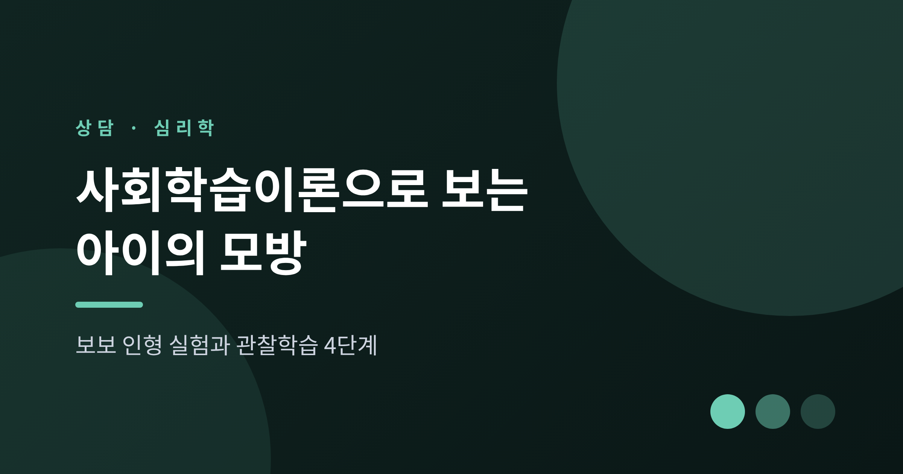
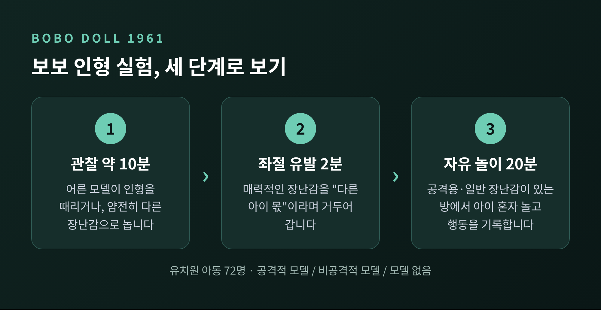
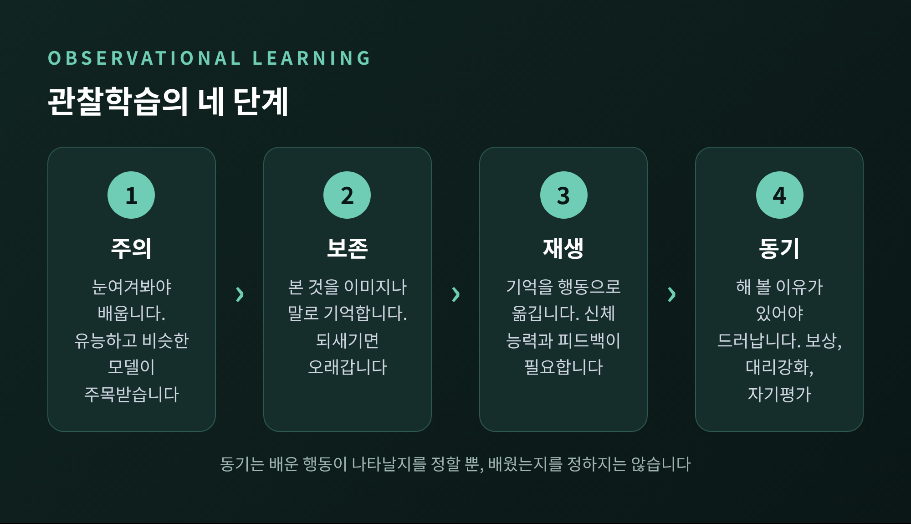
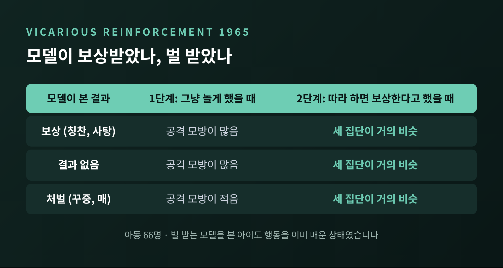
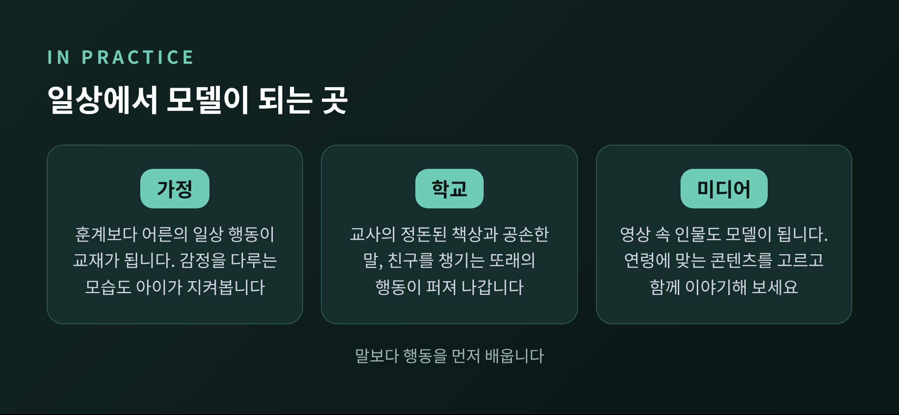
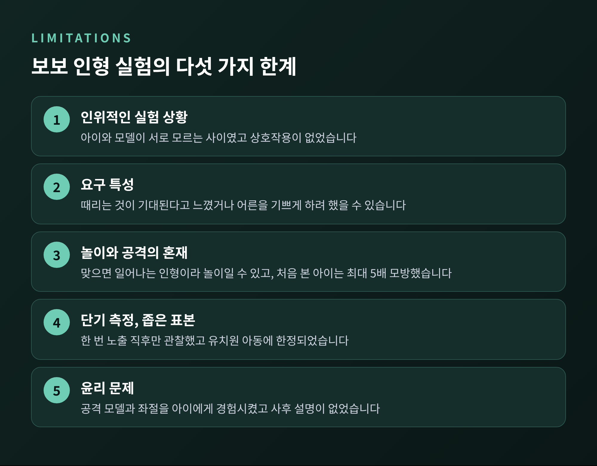

세 줄 요약
오늘은 반두라의 사회학습이론, 그중에서도 아이가 어른과 미디어의 행동을 어떻게 따라 배우는지 이야기해 보려 합니다. 유명한 보보 인형 실험과 관찰학습의 네 단계를 살펴보고, 가정과 학교에서 어떻게 활용할 수 있는지 정리하겠습니다. 이론의 한계도 함께 짚어 보겠습니다.
예전에는 학습을 직접 해 보고, 그 결과로 보상이나 벌을 받으며 일어나는 일로 보는 시각이 강했습니다. 반두라는 여기에 다른 길이 있다고 보았습니다. 다른 사람이 하는 것을 지켜보는 것만으로도 학습이 일어난다는 주장입니다.
핵심은 두 가지입니다. 첫째, 관찰학습은 단순한 흉내 내기가 아닙니다. 관찰자는 모델의 행동을 따라 하는 법뿐 아니라, 따라 하지 않는 법도 배웁니다. 둘째, 학습에 강화가 꼭 필요하지는 않습니다. 보상이나 벌은 배운 것을 행동으로 드러낼지에 영향을 주는 요인이라는 것이 반두라의 입장이었습니다.
이 이론은 이후 사회인지이론으로 발전했습니다. 1977년에 반두라가 모델링의 단계를 정리했고, 1986년 저서에서 더 체계적으로 다듬었습니다. 여기에는 자기효능감, 곧 자신이 그 행동을 해낼 수 있다는 믿음도 포함됩니다. 이 믿음이 클수록 모델의 행동을 따라 할 가능성이 높아진다고 봅니다.
사회학습이론을 가장 널리 알린 것은 1961년 반두라와 로스 부부의 보보 인형 실험입니다. 스탠퍼드 대학 부설 유치원의 아동 72명이 참여했습니다. 연령은 만 3~5세 무렵으로 기록됩니다. 다만 자료마다 연령 표기에 차이가 있어, 이 글에서는 대략적인 범위로만 적습니다.

실험은 세 단계로 진행되었습니다. 먼저 아이들은 어른 모델이 약 5피트(약 150cm) 높이의 오뚝이형 풍선 인형을 대하는 모습을 약 10분간 지켜봅니다. 공격적인 모델은 인형을 때리고, 망치로 치고, 소리를 질렀습니다. 비공격적인 모델은 얌전히 다른 장난감을 가지고 놀았습니다. 모델이 없는 통제 집단도 있었습니다.
다음은 좌절 유발 단계입니다. 아이가 매력적인 장난감을 잠시 가지고 놀게 한 뒤 "이 장난감은 다른 아이들 몫"이라며 거두어 갑니다. 아이의 마음에 약한 불만을 만들기 위한 장치였습니다.
마지막은 자유 놀이입니다. 아이는 망치와 다트총 같은 공격용 장난감, 그리고 티세트와 크레용 같은 일반 장난감이 놓인 방에서 20분간 놀았고, 연구진은 행동을 기록했습니다.
결과는 분명했습니다. 공격적인 모델을 본 아이들은 신체적 공격과 언어적 공격을 모두 더 많이 보였습니다. 비공격적인 모델을 본 아이들은 모델이 없던 통제 집단보다도 공격이 적었습니다. 같은 성별의 모델에게 더 크게 영향받는 경향도 나타났고, 전체 공격 횟수는 남아 270회, 여아 128회로 남아가 더 높았습니다. 더 눈여겨볼 점은 아이들이 본 행동을 그대로 따라 한 데 그치지 않고, 새로운 공격 행동까지 만들어 냈다는 사실입니다.
이후 1963년에는 모델을 실제 사람, 필름 속 사람, 만화 고양이 의상을 입은 모델로 나누어 비교했습니다. 필름이나 만화 속 모델을 본 아이들에게서도 공격 행동이 나타났습니다. 영상 속 행동도 모델이 될 수 있다는 뜻입니다. 다만 실제 모델과 영상 모델의 영향 크기를 두고는 자료마다 서술이 달라, 이 글에서는 어느 쪽이 더 크다고 단정하지 않겠습니다.
그렇다면 아이는 어떤 과정을 거쳐 본 것을 자기 행동으로 만들까요. 반두라는 네 단계를 제시했습니다.

첫째는 주의입니다. 눈여겨보지 않은 것은 배울 수 없습니다. 지위가 높거나 유능해 보이는 사람, 자신과 비슷한 사람, 눈에 띄고 감정을 건드리는 행동이 더 주목받습니다. 반대로 주변이 산만하거나 동작이 너무 복잡하면 주의가 흩어집니다.
둘째는 보존입니다. 본 것을 이미지나 말로 기억에 저장하는 단계입니다. 머릿속으로 되새기거나 실제로 연습해 보면 기억이 오래갑니다. 행동을 의미 있는 단계로 나누어 보여 주는 것도 도움이 됩니다.
셋째는 재생입니다. 저장한 것을 실제 행동으로 옮기는 단계입니다. 알고 있어도 몸이 따라 주지 않으면 하지 못합니다. 신체 능력과 성숙도가 한계를 정하고, 자기 모습을 지켜보거나 정확한 피드백을 받으면 동작이 다듬어집니다.
넷째는 동기입니다. 해 볼 이유가 있어야 행동이 나옵니다. 외적인 보상, 모델이 보상받는 모습을 보는 일, 자부심이나 죄책감 같은 자기 평가가 모두 동기가 됩니다. 이 단계를 요약한 문장이 있습니다. 동기는 학습한 행동이 나타나는지를 결정할 뿐, 학습했는지 여부를 결정하지는 않는다는 것입니다.
네 번째 단계와 맞닿은 개념이 대리강화입니다. 모델이 보상받는 것을 보면 그 행동을 하고 싶어지고, 벌 받는 것을 보면 하고 싶지 않아집니다. 앞의 경우를 대리강화, 뒤의 경우를 대리처벌이라 부릅니다. 형이 엄마 화장품을 만지다 꾸중 듣는 것을 본 동생이 같은 행동을 피하는 장면이 흔한 예입니다.
이 개념을 실험으로 확인한 것이 1965년 연구입니다. 아동 66명이 모델이 칭찬과 사탕을 받는 영상, 꾸중과 매를 맞는 영상, 아무 일도 없는 영상 중 하나를 보았습니다.

1단계에서는 예상대로였습니다. 벌 받는 모델을 본 아이들이 인형에게 덜 공격적이었습니다. 반전은 2단계에서 일어났습니다. 연구진이 모든 아이에게 "따라 하면 스티커와 주스를 주겠다"고 하자, 세 집단의 모방 수준이 거의 비슷해졌습니다. 벌 받는 모델을 본 아이들도 행동을 이미 알고 있었던 것입니다. 단지 하지 않았을 뿐입니다.
여기서 학습과 수행이 다르다는 점이 드러납니다. 아이가 어떤 행동을 하지 않는다고 해서 그 행동을 모르는 것은 아닙니다. 반대로 아이가 어떤 행동을 한 번 보였다면, 아이가 그것을 어디선가 보고 배웠을 가능성도 열어 두어야 합니다.
사회학습이론의 실용적 메시지는 단순합니다. 아이는 어른이 말하는 것보다 어른이 하는 것을 더 잘 따라 한다는 점입니다. 모델은 부모와 교사, 또래, 미디어로 다양하고, 사람은 모델이 되려는 의도가 없어도 모델이 됩니다.

가정에서는 어른의 일상적인 태도가 곧 교재가 됩니다. 어린 친척이 설거지하는 모습을 보고 어느새 함께 돕기 시작했다는 이야기가 있습니다. 거창한 훈계보다 사소한 행동의 반복이 더 큽니다. 화가 났을 때 어른이 어떻게 감정을 다루는지도 아이는 지켜봅니다.
학교에서는 교사의 모델링이 효과적입니다. 교사가 자기 책상을 정돈해 보이거나, "부탁합니다", "고맙습니다"를 자주 쓰면 학생이 그 방식을 받아들이기 쉽습니다. 또래 모델링도 힘이 큽니다. 한 학생이 전학생을 점심에 초대하면 다음에는 다른 학생이 따라 합니다. 질문한 학생을 칭찬하면 다른 학생들도 질문하기 시작합니다. 대리강화가 교실에서 작동하는 모습입니다.
학습 설계 측면의 시사점도 있습니다. 긍정적인 결과로 이어지는 행동을 관찰하고 흉내 낼 기회를 마련하고, 협력해서 배우는 환경을 만들며, 배운 행동이 나타나려면 적절한 유인과 지지적 분위기가 필요하다는 점을 기억하자는 것입니다. 아이가 아직 하지 않는다고 해서 배우지 못했다고 단정하지 않는 태도이기도 합니다.
미디어는 또 하나의 모델입니다. 보보 연구는 1960년대 텔레비전 폭력 논쟁과 이후 폭력적 미디어·게임 연구에 영향을 주었습니다. 2015년 미국심리학회(APA) 폭력미디어 태스크포스는, 폭력적인 비디오게임이 공격적 행동·생각·감정의 증가, 그리고 친사회적 행동과 공감의 감소와 일관되게 연관된다고 밝혔습니다. 동시에 범죄적 폭력이나 비행으로 이어진다는 증거는 아직 매우 제한적이라고 선을 그었습니다. 공격성은 여러 위험 요인이 쌓여 생기는 것이며 폭력적인 게임은 그중 하나라는 설명입니다. 겁을 낼 일도, 가볍게 넘길 일도 아니라는 이야기입니다.
이론이 유용하다고 해서 한계가 없는 것은 아닙니다. 보보 인형 실험을 향한 비판은 꽤 구체적입니다.

첫째, 실험 상황이 인위적입니다. 아이와 모델은 서로 모르는 사이였고 상호작용도 없었습니다. 실제 가정이나 학교의 관계 맥락이 빠져 있다는 뜻입니다.
둘째, 요구 특성이 있었을 수 있습니다. 아이들이 인형을 때리는 것이 기대되는 행동이라고 느꼈거나, 어른을 기쁘게 하고 싶었을 가능성이 있습니다.
셋째, 놀이와 공격이 섞였을 수 있습니다. 보보 인형은 맞으면 다시 일어나도록 만들어진 장난감입니다. 인형을 때린 행동이 실제 사람을 향한 공격과 같다고 보기는 어렵습니다. 1990년의 재현 연구에서는 보보 인형을 처음 본 아이가 최대 5배까지 더 많이 모방했다고 하여, 새로움 자체가 결과를 키웠을 가능성도 제기됩니다.
넷째, 측정이 단기였습니다. 한 번의 노출 직후에 관찰했으므로 장기적 영향은 알 수 없습니다. 표본도 유치원 아동에 한정되었습니다.
다섯째, 윤리 문제가 있습니다. 아이들에게 공격적인 모델과 좌절 상황을 경험하게 했고, 오늘날의 연구 기준에서는 통과하기 어렵다는 평가가 많습니다. 같은 모델을 본 아이들이 서로 다른 정도로 따라 하는 이유를 이론이 충분히 설명하지 못한다는 지적도 있습니다.
그래서 이 이론은 정답이라기보다 관점으로 받아들이는 편이 좋겠습니다. 보보 실험의 수치를 그대로 우리 집 아이에게 대입할 수는 없습니다.
이 글은 일반적인 심리학 정보이며, 특정 아이나 가정을 진단하는 글이 아닙니다. 아이의 공격적 행동이나 모방이 걱정될 때, 흔히 이런 모습을 떠올리곤 합니다. 한 아이가 형제나 또래를 때리는 장면을 보고 같은 행동을 반복하거나, 영상 속 장면을 놀이에서 계속 재현하는 경우입니다. 이런 행동이 짧은 기간의 호기심인지, 도움이 필요한 신호인지는 글만으로 판단하기 어렵습니다.
행동이 오래 이어지거나, 일상과 또래 관계에 어려움이 생기거나, 어른이 감당하기 벅차다고 느껴진다면 혼자 고민하지 마시고 아동·청소년 상담 전문가나 소아정신건강의학과 등 전문 기관의 도움을 받으시길 권합니다. 도움을 청하는 일은 약함이 아닙니다.
정리하면 이렇습니다. 반두라의 사회학습이론은 아이가 보상을 받지 않아도 지켜보는 것만으로 배우며, 배운 것을 드러낼지는 동기가 정한다고 말합니다. 보보 인형 실험은 그 증거로 널리 쓰였지만, 인위적인 상황과 단기 관찰이라는 한계 안에서 읽어야 합니다.
결국 남는 것은 하나입니다. 아이는 어른의 말보다 어른의 모습을 먼저 배웁니다.
오늘 우리 아이가 가장 가까이에서 보는 모델은 누구일까요. 그 질문을 한 번 던져 보시는 것만으로도, 하루의 행동 몇 가지는 달라질 수 있을 것입니다.